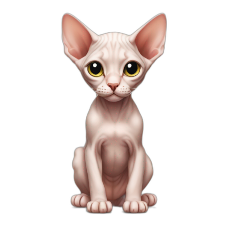

Сторінку не знайдено
404
Схоже, ця сторінка зникла з маршруту. Повернись на головну або напиши Яні про свій проєкт.
На головну404Маршрут не знайдено, але стратегія росту все ще поруч.

Сторінку не знайдено
Схоже, ця сторінка зникла з маршруту. Повернись на головну або напиши Яні про свій проєкт.
На головну